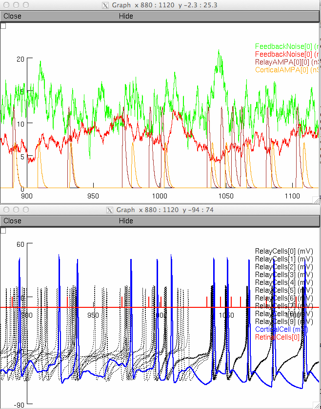

NEURON DEMO FOR SIMULATING THALAMOCORTICAL CONVERGENCE CIRCUITS
Sebastien Behuret
behuret@unic.cnrs-gif.fr
CNRS, UNIC (Bat-33), Avenue de la Terrasse,
91198 Gif-sur-Yvette, France
PACKAGE DESCRIPTION
===================
This package is running with the NEURON (v7.x) simulation program
written by Michael Hines and available on internet at:
http://www.neuron.yale.edu/neuron/
The package contains programs needed to simulate the thalamocortical
convergence model circuits relative to the paper:
Béhuret S, Deleuze C, Gomez L, Frégnac Y, Bal T (2013)
Cortically-Controlled Population Stochastic Facilitation as a
Plausible Substrate for Guiding Sensory Transfer across the
Thalamic Gateway. PLoS Comput Biol 9(12):
e1003401. doi:10.1371/journal.pcbi.1003401
An electronic version of this paper is available at:
http://www.ploscompbiol.org/article/info:doi/10.1371/journal.pcbi.1003401
(alternate links)
http://www.behuret.net/sci/Behuret_et_al_Sensory_Transfer_Stochastic_Facilitation_PLoSCompBiol_2013.pdf
http://www.behuret.net/sci/Behuret_et_al_Supporting_Information_PLoSCompBiol_2013.zip
A demonstration of the circuit activity will be shown upon startup
along with a simple GUI intended at easily changing the model
parameters. A simulation mode is also provided (to activate this mode,
please refer to the instructions given in Run.hoc).
In the demo mode, activity traces for the cortical and the
thalamocortical cells in an optimal regime (uncorrelated synaptic
noise) will be simulated for 1s. After this period, correlation of the
synaptic noise across the TC cells will be switched from 0% to
99%. Simulated voltage traces will be displayed in a graph.
INCLUDED FILES
==============
Run.hoc Main program file
Demo.hoc Main file for the demo mode
Simulation.hoc Main file for the simulation mode
Templates.hoc Cortical and thalamocortical cellular models
Geometry.hoc Retino-thalamo-cortical core circuit implementation
Recording.hoc Activity recording functions
GUI.hoc Graphical user interface initialization
RetinalInput.mod Retinal input spike train generator
ConductancePattern.mod Synaptic conductance patterns
SynapticNoise.mod Synaptic bombardment model
ConstantCurrent.mod Basic current injection
SineWaveCurrent.mod Sine-wave current injection
RandomGenerator.mod Random number generator
cadecay.mod Intracellular calcium dynamics (From Alain Destexhe)
hh2.mod Fast sodium spikes (Na and K currents) (From Alain Destexhe)
IM.mod Slow voltage-dependent potassium current (IM) (From Alain Destexhe)
ITGHK.mod T-type calcium current of TC cells (From Alain Destexhe)
IT.mod T-type calcium current (From Alain Destexhe)
HOW TO RUN THE DEMO
===================
To compile the program, NEURON and INTERVIEWS must be installed and
working on the machine you are using with appropriately set
environment variables. To compile the mechanisms given in the mod
files, just type from the main directory: nrnivmodl
Then, execute the demo by typing:
nrniv Run.hoc -
The simulation will be started automatically. Here are zoomed in
displays of 100 ms before and after the time at 1s were the simulation
changes from optimal activity to 99% synaptic noise correlation.

For more information about how to get NEURON and how to install it,
please refer to the following site:
http://www.neuron.yale.edu/neuron/download
For further information, please contact:
Sebastien Behuret
CNRS, UNIC (Bat-33),
Avenue de la Terrasse,
91198 Gif-sur-Yvette,
France
email: behuret@unic.cnrs-gif.fr